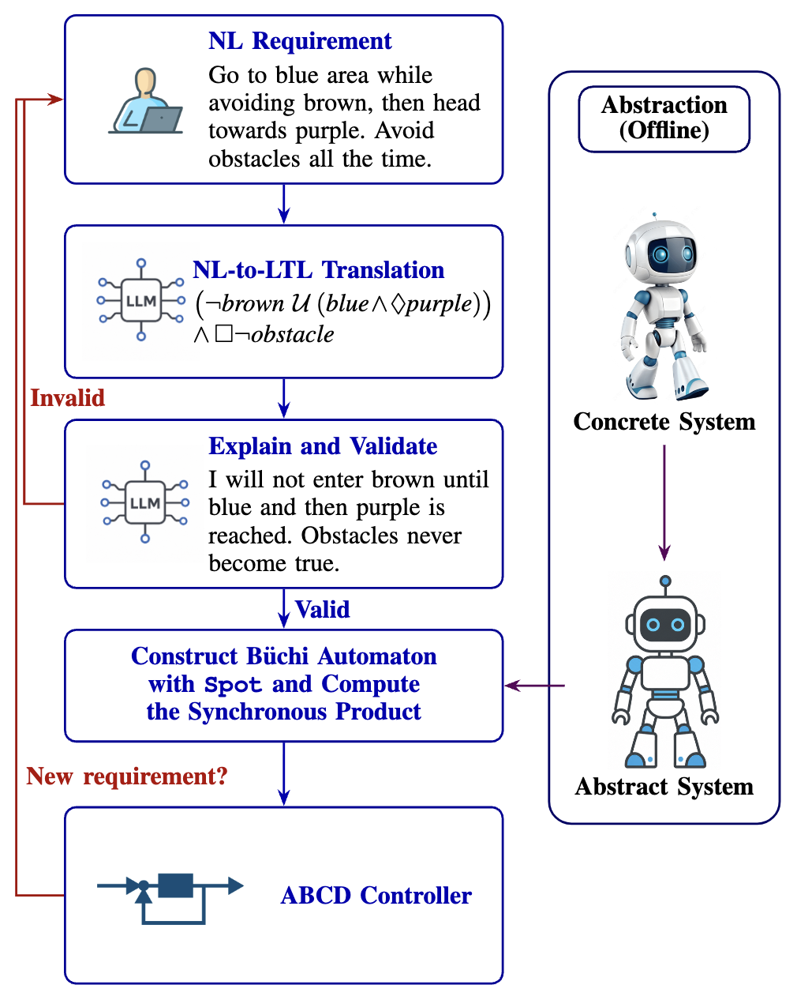
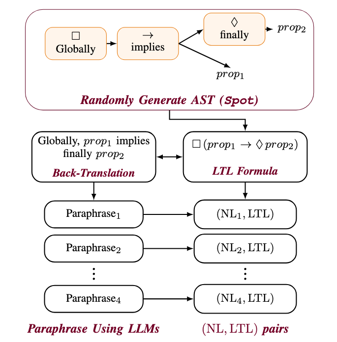
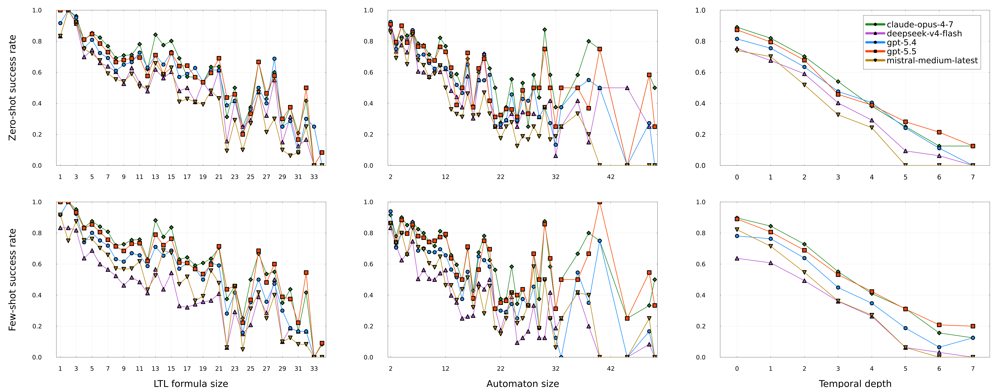
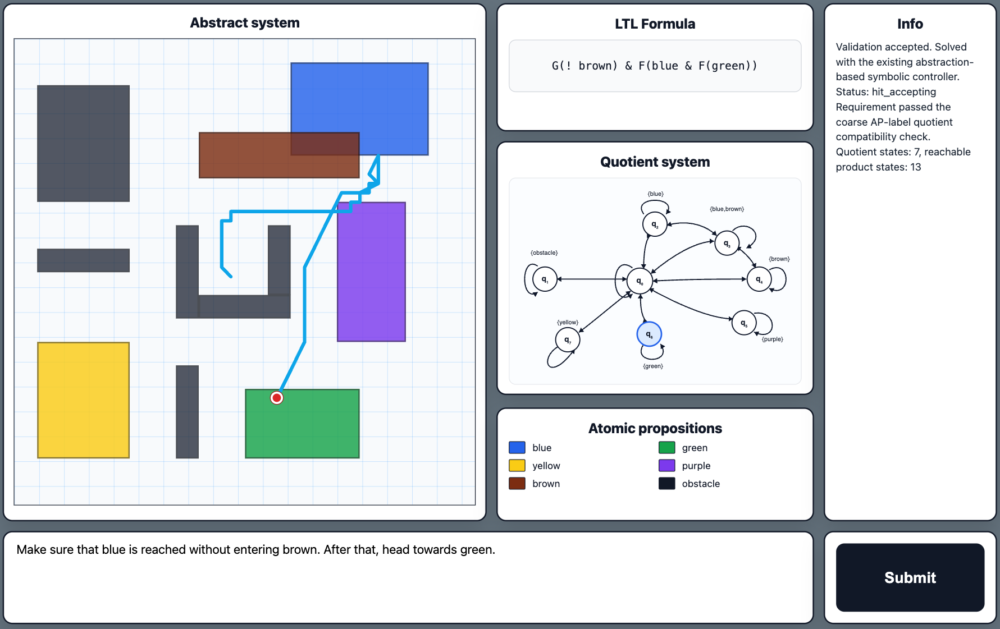

Abstraction-Based Controller Design (ABCD) offers a principled framework for the safe control of complex Cyber-Physical Systems (CPSs), but interfacing real-world requirements with its formal synthesis machinery remains a major bottleneck: such requirements are most naturally expressed in Natural Language (NL), whereas ABCD requires formal specifications such as Linear Temporal Logic (LTL). Large Language Models (LLMs) offer a promising way to bridge this gap by translating NL requirements into formal specifications.
This paper makes three contributions. First, we formalize an LLM-enhanced
pipeline for ABCD, in which NL requirements are translated into LTL and
used within a formal synthesis workflow. Second, we implement this pipeline
in the Dionysos toolbox and introduce a benchmark for
evaluating NL-to-LTL translation under both logical diversity and
linguistic variation.
Third, through experiments with state-of-the-art LLMs, we show that translation accuracy degrades systematically as the target specifications become more complex, across several measures including Abstract Syntax Tree (AST) size, temporal depth, and Büchi automaton size, while also accounting for the length of the NL input. These results reveal a scaling law that links LLM success rate to the intrinsic complexity of the underlying LTL formula. Together, these contributions provide both an evaluation framework and a practical integration pathway for making ABCD more accessible while preserving the rigor of formal methods.
The proposed framework translates NL requirements into LTL formulas, validates the generated formal specification with the user, constructs the corresponding Büchi automaton, and synthesizes an ABCD controller. The abstract system is computed offline from the CPS model.

We introduce a benchmark for evaluating NL-to-LTL translation beyond a limited set of hand-written templates. LTL formulas are generated with controlled AST size, back-translated into canonical English, and then paraphrased using multiple LLMs to introduce linguistic diversity.

| Statistic | Ours | VLTL | Conf. |
|---|---|---|---|
| Total formula templates | 1031 | 43 | 65 |
| Unique formula templates | 660 | 42 | 61 |
| Max. formula size | 80 | 33 | 17 |
| Max. #APs | 10 | 3 | 6 |
| Max. temporal depth | 7 | 6 | 4 |
We evaluate several state-of-the-art LLMs on the generated benchmark under zero-shot and few-shot prompting. The results show that performance decreases as the structural complexity of the target LTL formula increases.

| Model | Zero-Shot | Few-Shot |
|---|---|---|
| Claude Opus 4.7 | 73.23% | 75.63% |
| GPT-5.5 | 64.79% | 70.53% |
| GPT-5.4 | 66.73% | 66.95% |
| DeepSeek-V4-Pro | 52.79% | 60.23% |
| Mistral Medium | 56.55% | 60.70% |
| T5-base fine-tuned | 8.91% | – |
We implement an interactive interface for synthesizing ABCD controllers from NL requirements. The user enters an NL requirement, the system generates the corresponding LTL formula, and the controller synthesis pipeline is executed through Dionysos.jl.

R.M. Jungers is an FNRS Honorary Research Associate. This project has received funding from the European Research Council (ERC) under the European Union's Horizon 2020 research and innovation programme, grant agreement No. 864017 (L2C); from the Horizon Europe programme, grant agreement No. 101177842 (UNIMAAS); from the Walloon Region through the FLEXtest project; and from the ARC project SIDDARTA of the French Community of Belgium. A. Bayat is supported by the French Community of Belgium through an FNRS/FRIA grant.